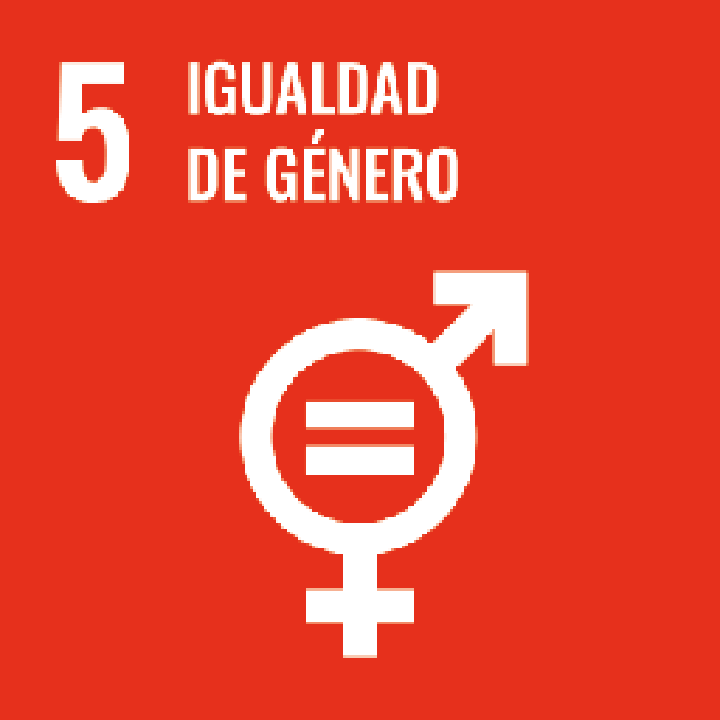

Sobre diptyka
Diptyka es un proyecto multidisciplinar que investiga y comunica el diseño gráfico desde una mirada crítica, con énfasis en visibilizar el trabajo de las mujeres.
Diseñadoras
Laura Cortes
Andrea Cuellar
Laura Saganome
Valentina Henao
Propósito
Diptyka nace como respuesta a la invisibilización de diseñadoras en la historia del diseño gráfico. Nuestro propósito es recuperar, amplificar y conectar las voces femeninas del diseño, creando una red de conocimiento y reconocimiento.
Objetivo de Desarrollo Sostenible
Diptyka se alinea con el ODS 5. Igualdad de género. Aunque más que igualdad: queremos equidad. Porque la equidad en el diseño también se diseña
Qué encontrarás en el proyecto
En Diptyka encontrarás perfiles de nuevas diseñadoras, artículos y debates actuales, recursos para tu práctica profesional y una reconstrucción viva de la historia del diseño gráfico desde otras voces.
Misión
Diptyka es una plataforma que investiga, comunica y visibiliza el diseño gráfico desde una perspectiva crítica y feminista. Nuestro propósito es recuperar aportes silenciados de mujeres en la historia del diseño, amplificar las voces de diseñadoras contemporáneas y crear conexiones que impulsen su desarrollo profesional, creativo y humano. Combinamos teoría y práctica para construir nuevas narrativas visuales, cuestionar estructuras tradicionales y fomentar un diseño más inclusivo, consciente y transformador.
Visión
Ser una referencia clave en el ámbito del diseño gráfico crítico y feminista en Latinoamérica, consolidando una comunidad de diseñadoras que transforman la forma en que entendemos, enseñamos y practicamos el diseño. Aspiramos a reescribir la historia visual desde múltiples voces, conectando generaciones y territorios, y generando impacto cultural a través de la memoria, la creación y la colaboración.